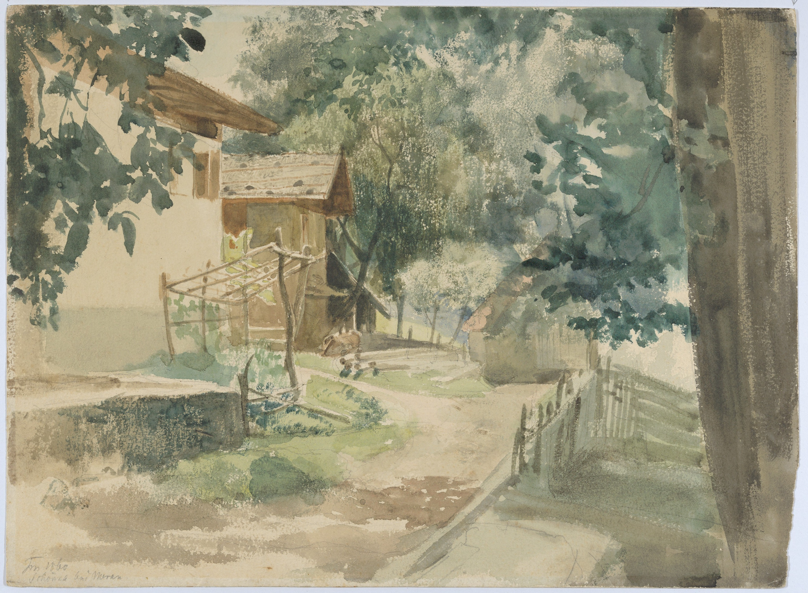
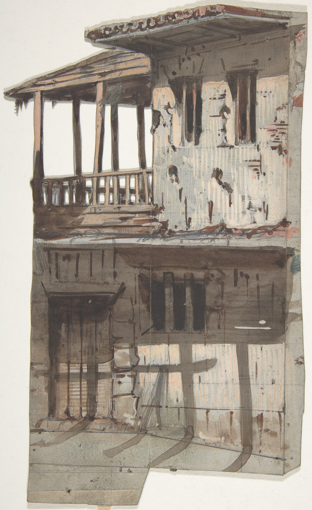
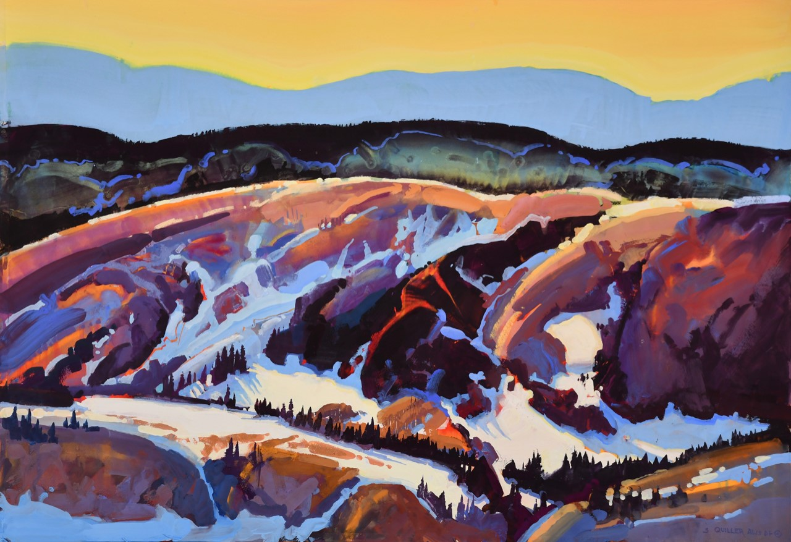
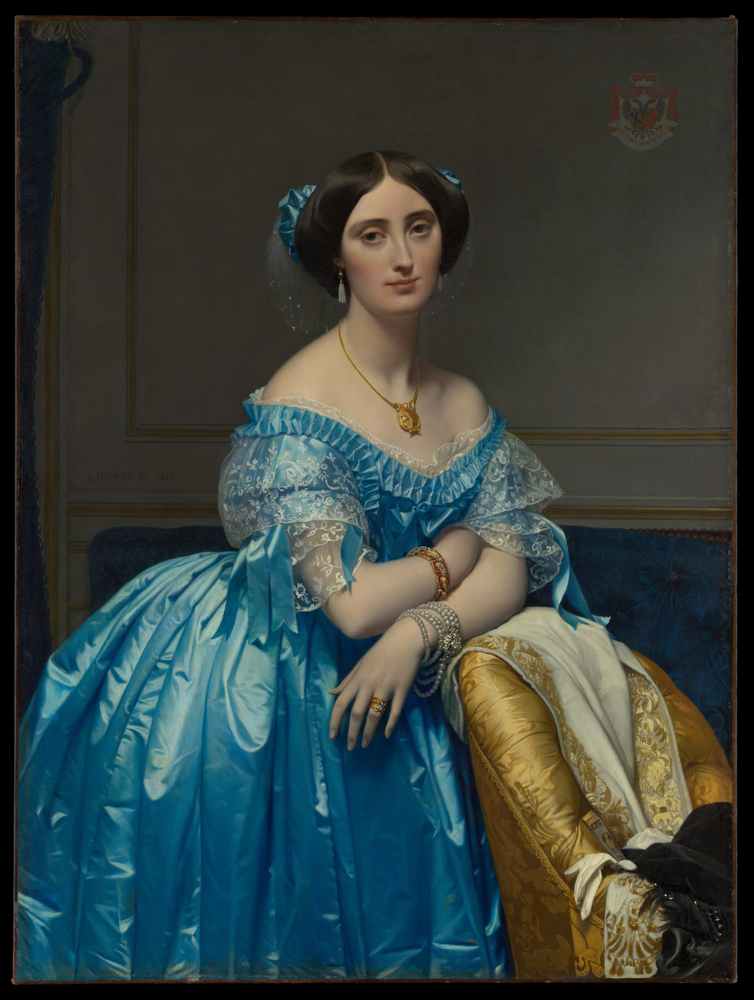
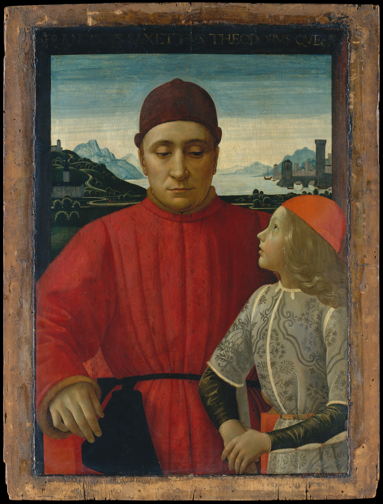
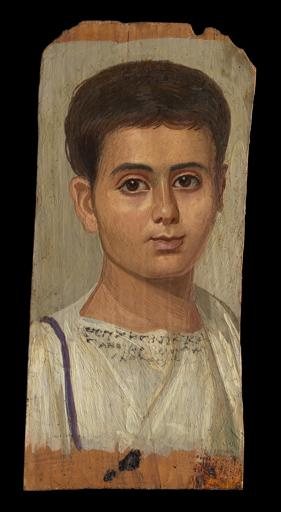

What is paint made of?
Paint is typically made up of a binder (aka resin), pigment, solvent, and additives. Pigments gives the paint color Binders keeps all the components of the paint together Solvents help the paint stick to surfaces Additives are substances added to change/ add characteristics to the paint (more opaque, fungi resistance, and so on)
Basic Process:
Types of Paint & their main Characteristics:
Acrylic
Made up of pigment, Acrylic Polymer Emulsion (as it’s binder, made with acrylic resin). Drying depends on the thickness of the coat (Drys fast for average application)
- Water-soluble, once dry, waterproof
- Opaque but can be thinned
Watercolor
Pigment and a water-soluble binder (usually gum Arabic), can be made to be more transparent.
- Drying time depends on water content
- Water-soluble
- Transparent (Varying opaqueness depending on water content)
Gouache
Pigment and a water-soluble binder (usually gum Arabic), has a higher pigment to water ratio, sometimes white chalk pigment is added, this makes it thicker and opaquer than watercolor.
- Drying time depends on water content
- Water-soluble
- Opaque-Transparent (Varying opaqueness depending on water content)
Casein
Casein (derived from its binder casein [a protein found in milk] dissolved in an alkali) paint is thought to be the water-based paint closest resembling oil paint.
- Fast Drying
- Becomes water resistant over time
- Dries stiff and brittle (flimsy/bendable surfaces not recommended)
- Matte
Oil
Oil paint is a paint with oil (usually linseed) as it’s binder, because oil takes much longer to dry, it’s perfect for blending and adding light color variations.
- Slow Drying
- Water-insoluble
- Thick (opaque)
Tempera
Tempera is a paint with a gel-like binder (traditionally egg yolks). Popular until around the 1500s when oil paint became more favorable.
- Dries Fast
- Water-soluble
- Thin (transparent)
Encaustic
Typically made up of beeswax, pigment, and a bit of hardener (dammar resin or carnauba wax), no solvent, Encaustic paint is essentially colored wax. The paint must be heated before application, then at the end to fuse it to the surface. It’s applied to an absorbent surface (like wood but canvas can be used as well).
- Water-repellent
- No discoloration
- Cools immediately but can be reworked (heated again)
- Varying Opaqueness